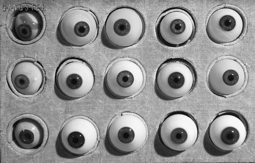

Ahh, I bet you had no idea all of your co-workers are watching you right now.
This is what happens when you forget to end the call, and when you forget to turn off your camera.
Ingredients:
- 4 cups of forgetfulness.
- 7 ounces of shame.
- A handful of newfound trauma.
- 173 new job applications.
Steps:
- Start conference call with coworkers.
- Realize no one wants to be on the call, proceed anyways.
- Pontificate.
- Time to end the call: pour in the 4 cups of forgetfulness.
- Start getting ready to take a shower.
- Hear notification sound, check computer; stir in the 7 ounces of shame.
- After coming to terms with having stripped for your entire office, add in a dash of that newfound trauma.
- Start filling out new job applications. 173 new applications, actually.
- Vow never to use Zoom again.
Relive this disastrous day.
Return to full list of disasters.